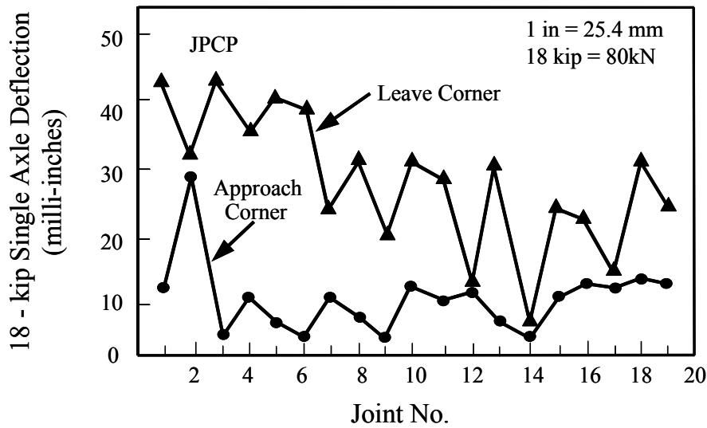
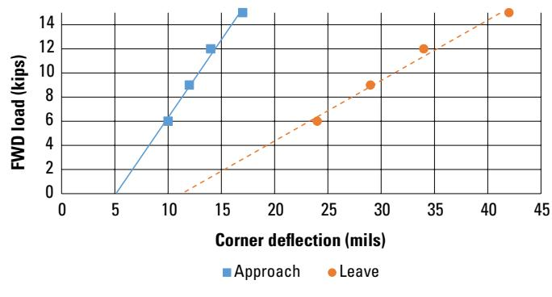
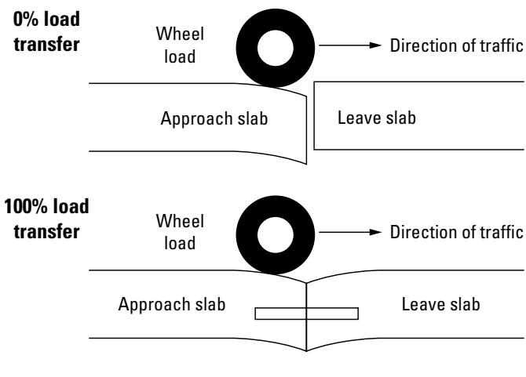
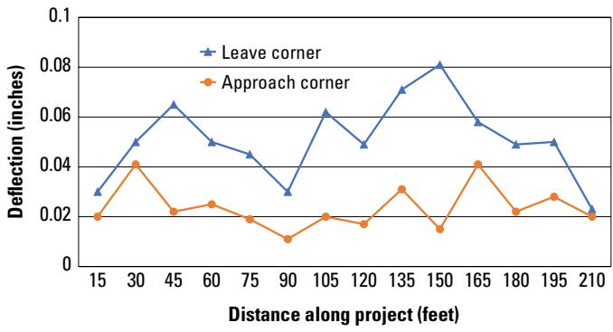

Falling Weight Deflectometer (FWD) Soil Support Assessment
The Falling Weight Deflectometer (FWD) soil‑support assessment is a non‑destructive, impact‑load test used on concrete slab pavements—particularly highway slabs—to evaluate the ability of the underlying subgrade, base or subbase (and any rigid layers) to bear traffic loads and to detect loss‑of‑support conditions such as voids beneath corners, edges or joints. [2][3] The device releases a calibrated weight onto an 11.8‑in (300 mm) plate at three standard load levels (approximately 9 000, 12 000 and 16 000 lb), producing a deflection basin that is recorded by sensors at prescribed distances; the resulting load‑deflection curves are back‑calculated to quantify subgrade and base stiffness, uniformity, and load‑transfer efficiency. [4][5] Characteristic indicators such as peak corner deflections, the proximity of the load‑deflection line to the origin (within ~2 mils), and a corner‑to‑interior support ratio above 0.75 are used to confirm adequate support, while deviations signal stiffness deficiencies or voids that may require remediation. [2][3]
Sources (5)
Purpose and investigation objectives
The Falling Weight Deflectometer soil‑support assessment evaluates the ability of the underlying subgrade, base or subbase (and any rigid layers) to support a concrete pavement slab. It “evaluate the underlying support conditions” and “detect the presence of voids beneath the slab.” The test “assess the level of support under the slabs and determines differences in support” and, through back‑calculation, determines “the stiffness and uniformity of both the subgrade and base support.” The assessment also “uses measured pavement deflections to evaluate the uniformity of the underlying support—soil and subgrade conditions—along a concrete‑pavement project” and specifically “evaluates loss of support, or voids, that may exist beneath concrete slab corners and edges where high deflections, excess moisture, or an erodible base/subbase have compromised the foundation.
The investigation must answer several key questions: * Where are the locations of reduced or lost support? (e.g., “Identification of Locations with Loss of Support (Voids)” and “Loss of support can develop beneath slab corners and edges”) * How much support is missing and does it exceed a void threshold? (e.g., “If no void exists, the line will project very near the origin, typically no farther away than about 2 mils, whereas lines projecting more than that distance from the origin suggest the presence of a void.”) * Are observed deflections caused by foundation erosion or slab deformation such as curling/warping? (e.g., “Crovetti (2002) used the ratios of foundation support calculated from center slab, edge, and corner FWD testing to determine if the deflections were from erosion or curling.”) * Do corner‑to‑interior support ratios indicate non‑uniform support requiring remedial action? (e.g., “if the ratio of corner-to-interior foundation support is less than 0.75, nonuniform support is indicated”)
Additional questions derived from other guidance include: * Whether the subgrade can sustain traffic loads – “The investigation must answer whether the subgrade can sustain traffic loads” * Where voids or weak zones exist (especially at slab edges and corners) – “where voids or weak zones exist (especially at slab edges and corners)” * If any layer is “weaker” or “thinner” than required – “if any layer is "weaker" or "thinner" than required” * How variable the support is along the alignment – “how variable the support is along the alignment” * Which site factors (moisture, drainage, cut/fill) are contributing to excessive deflection – “which site factors (moisture, drainage, cut/fill) are contributing to excessive deflection” * What remediation (e.g., grouting volume) may be needed to restore full support – “what remediation (e.g., grouting volume) may be needed to restore full support.”
The test applies a calibrated load pulse through an 11.8‑in diameter plate (“The FWD emits a load pulse to the pavement through a load plate that is 11.8 in. (300 mm) in diameter to create a deflection basin”) at three levels (“deflection is measured at three different loads: 9,000, 12,000, and 16,000 lb”) to generate a deflection basin that “quantifies load transfer efficiency, identifies loss of support (voids), and reveals stiffness deficiencies in any structural layer.” [2][3][4][5]
The following figure illustrates how deflection is transferred through pavement layers under these applied loads.
 Schematic comparison of deflection load transfer at a concrete pavement joint under wheel loading. [3]
Schematic comparison of deflection load transfer at a concrete pavement joint under wheel loading. [3]
The figure illustrates the concept of deflection load transfer by comparing two scenarios: one with no load transfer and another with perfect load transfer across a joint between an approach slab and a leave slab. In the top scenario, labeled “0% load transfer,” the wheel load on the approach slab causes deflection only on that side, while the leave slab remains flat; in the bottom scenario, labeled “100% load transfer,” a dowel bar connects the slabs so both sides deflect equally.
[2] — Ch. 4 (pp. 102–174), Ch. 19 (p. 468); [3] — Ch. 3 (pp. 53–55), Ch. 4 (pp. 82–83); [4] — Ch. 3 (p. 33); [5] — Ch. 3 (pp. 45–53), Ch. 4 (pp. 77–80)
The FWD survey delivers a spatially continuous deflection basin that quantifies subgrade and base stiffness, allowing engineers to locate weak or uneven zones such as settlement, heave, or voids. Deflection testing using the FWD can be performed to evaluate the underlying support conditions, and the resulting data are plotted by station so that peaks can be correlated with observed distress, moisture problems, cut‑fill transitions, or other subgrade anomalies. By comparing load‑deflection curves at three standard loads, planners can identify sections where peak corner deflections exceed acceptable limits; generally speaking, it is desirable that peak corner deflections be less than 25 mils and that the difference in deflections across a loaded joint or crack be limited to 5 mils or less. When the ratio of corner‑to‑interior foundation support falls below 0.75, nonuniform support is indicated, prompting subgrade stabilization, increased layer thickness, or targeted grout injection. FWDs can be used to assess the load transfer characteristics of the cracks, informing decisions on joint treatment, slab reinforcement, or reconstruction. The quantitative insight into loss‑of‑support zones enables planning and design to be based on measured soil support rather than assumptions, directs maintenance crews to problem areas before surface distress propagates, and guides rehabilitation programs to allocate resources toward spot repairs, full‑depth replacement, or other corrective actions that address the identified deficiencies. [2][3][4][5]
The following figure illustrates a typical example of such corner deflection profiles.

Example profile of corner deflections (Darter, Barenberg, and Yrjanson 1985). [5]The figure displays the deflection profiles at both the approach and leave corners across multiple joints, illustrating how these values fluctuate along the pavement length. This data supports the assessment of soil support by identifying locations where corner deflections are high or where a significant difference exists between approach and leave corners, which indicates loss-of-support conditions such as voids.
[2] — Ch. 4 (pp. 102–296), Ch. 19 (p. 468); [3] — Ch. 3 (pp. 51–55), Ch. 4 (pp. 82–83); [4] — Ch. 3 (p. 33); [5] — Ch. 3 (pp. 45–53), Ch. 4 (pp. 77–80)
Scope and applicability
The guides concur that Falling Weight Deflectometer (FWD) soil‑support assessment is intended for concrete slab pavements—especially highway slabs—where the condition of the underlying base, subbase or subgrade may be compromised. It is employed when loss‑of‑support conditions are suspected, such as voids beneath slab corners, edges or joints that arise from high deflections, excess moisture, settlement, heave, or an erodible base/subbase material. The technique also serves to evaluate the uniformity and structural adequacy of the subbase or subgrade, including situations with variable slab or base thicknesses, subgrade variability, underlying rigid strata, or a poorly bonded concrete‑base interface. Material‑related distresses that increase deflection magnitudes—e.g., transverse, diagonal or early‑stage full‑depth corner cracking, alkali‑silica reactivity (ASR), D‑cracking—as well as vertical pavement displacement and higher deflections near joints, edges or cracks prompt the use of FWD to assess load transfer efficiency and detect voids. Site conditions favoring its application include large, heavy traffic loads that demand an extremely supportive subgrade, ambient temperatures below 70 °F (to ensure reliable temperature‑dependent concrete response), and the need for rapid testing on extensive projects using standard load levels (6 k, 9 k, 14 k lbf or 27, 40, 63 kN). [2][3][4][5]
The figure below illustrates pavement deflection as a function of dynamic load.
 Pavement deflection as a function of dynamic load. [5]
Pavement deflection as a function of dynamic load. [5]
The figure plots pavement deflection against applied load, illustrating the nonlinear behavior where higher loads produce disproportionately larger deformations compared to lower loads. This nonlinearity is a critical factor in Falling Weight Deflectometer (FWD) soil-support assessment, as it necessitates using test loads that are representative of actual design traffic loads to accurately evaluate the stiffness and uniformity of the underlying subgrade.
[2] — Ch. 4 (pp. 102–296), Ch. 19 (p. 468); [3] — Ch. 3 (pp. 54–55), Ch. 4 (pp. 82–83); [4] — Ch. 3 (p. 33); [5] — Ch. 3 (pp. 45–53), Ch. 4 (pp. 77–80)
The guides agree that FWD provides rapid, high‑load deflection data for assessing subgrade stiffness, yet its reliability diminishes under several conditions. The method works best while the concrete slab is still largely intact; once full‑depth corner cracking has occurred, “After slab corners crack completely, FWD results become less meaningful and more difficult to interpret,” so alternative or supplementary investigations are required. Temperature also exerts a strong influence: “When utilizing the FWD, it is important to note the temperature and surrounding conditions” and testing should be performed when “deflection testing be conducted when the ambient temperature is below 70°F.” Small deflections introduce measurement error, making accurate load‑transfer efficiency (“LTE”) difficult to establish: “It is important to recognize that accurately establishing the LTE of pavements with very low deflection values can be challenging as error in the measurement may affect the calculated results.”
Spatial coverage is another limitation. Because traditional FWD records only discrete points, gaps can leave engineers uncertain about condition continuity; “Continuous deflection profiles provide the following advantages over discrete deflection measurements:” and when “full‑length investigations that require detection of spatial variability due to joints, cracks, patches, or subgrade changes… ambiguous FWD plots” are needed, a complementary technique should be employed. Joint, edge, or crack proximity further skews results: “Testing near joints, edges, or cracks can produce higher deflections than testing at interior portions of the slab,” and natural variability often reaches 20‑30 % (“The coefficient of variation for deflection measurements along a project is typically 20 to 30 percent, and sometimes higher”). The rapid dynamic load of an FWD can mask subtle deficiencies: “a slow, static loading condition produces a different response than a rapid, dynamic loading condition.”
When any of these constraints are present—full‑depth cracking, adverse temperature, very low deflections, high variability, or the need for continuous profiling—the guides recommend complementary or alternative investigations. Continuous‑deflection devices such as traffic speed deflectometers or total pavement acceptance devices “provide uninterrupted profiles and reduce crew exposure to traffic.” For thin pavements or limited access, a lightweight option is advised: “While FWD tests can be run quickly for larger projects, a smaller and more portable alternative that works well for thin pavements is the light weight deflectometer (LWD).” To confirm void presence or locate cavities, nondestructive methods are suggested: “Alternatively, ground penetrating radar (GPR) may also determine voids beneath the slabs,” and other NDT options include infrared thermography (“Other NDT methods have been used for void detection, including ground penetrating radar (GPR) and infrared thermography”). In cases where a static reference is desired, “a slow, static loading condition produces a different response than a rapid, dynamic loading condition” and devices such as the Benkelman Beam can be employed. [2][3][4][5]
The following figure illustrates how deflection measurements are obtained using the Falling Weight Deflectometer device.
 Schematic of a Falling Weight Deflectometer (FWD) device and the resulting deflection basin on pavement. [3]
Schematic of a Falling Weight Deflectometer (FWD) device and the resulting deflection basin on pavement. [3]
The figure displays a schematic of a Falling Weight Deflectometer (FWD), showing a weight dropping from a specific height onto a load plate via a buffering system to simulate traffic loads. A series of sensors is positioned at predetermined distances from the load plate to measure the resulting deflection basin in the pavement structure. This setup allows for the assessment of existing concrete pavements by recording how the underlying layers respond to impact loads.
[2] — Ch. 4 (p. 174), Ch. 19 (p. 468); [3] — Ch. 3 (pp. 51–55), Ch. 4 (pp. 82–83); [4] — Ch. 3 (p. 33); [5] — Ch. 3 (pp. 46–48), Ch. 4 (pp. 77–80)
Existing information and records
When conducting a Falling Weight Deflectometer soil‑support assessment, the analyst should gather all existing records that can be linked to the measured deflections. These include distress inventories or maps, drainage surveys and documentation, material specifications or inventories, and subgrade investigation data. By plotting maximum deflection values by station and overlaying them with these datasets, engineers can pinpoint subsections where moisture problems, cut‑and‑fill activities, or other adverse conditions are compromising pavement support. [3][5]
The figure below illustrates how deflection values vary along a project section to help identify these compromised areas.
 Plot of normalized maximum pavement deflection versus distance along the roadway. [5]
Plot of normalized maximum pavement deflection versus distance along the roadway. [5]
The figure displays a line graph plotting normalized maximum deflection against the distance along the roadway, illustrating how pavement stiffness varies across different sections of a project. This visualization supports the assessment of uniformity in support conditions by allowing engineers to identify subsections where distress or adverse subgrade conditions may be compromising the pavement structure.
[3] — Ch. 3 (p. 53); [5] — Ch. 3 (p. 51)
The guides identify several record gaps that must be resolved by field investigation before FWD soil‑support results can be trusted. First, existing documentation often consists of isolated point measurements; the phrase “no danger of missing critical sections” is questioned because “the spatial variability in deflections due to pavement features such as joints, cracks, patches” means a single test may not be representative of an entire slab. Deflection values are frequently untethered from precise project stations, preventing confirmation that observed distresses (moisture problems, cut/fill) correspond to underlying support conditions.
Second, key material and structural data are missing or unreliable. Random variations in slab‑and‑base thicknesses, subgrade stiffness, and concrete‑base bond status create a “coefficient of variation of 20–30 % in measured basins,” making it difficult to separate true support loss from normal variability. Material distress (alkali‑silica reactivity, D‑cracking) can also elevate deflections.
Third, measurement accuracy is limited. Low‑deflection readings are vulnerable because “different LTE values may be obtained depending on which side of the joint is loaded,” and temperature effects can mask true conditions; therefore testing should occur when “the ambient temperature is below 70°F in order to minimize the impact of slab curling.” The standard void‑detection plot “may have difficulties in determining if the void is due to erosion or to curling and/or warping of the slab,” and reliance on a single corner‑deflection threshold (e.g., “a reasonable value might be 0.5 mm”) is problematic because load transfer variations from joint‑to‑joint cause considerable variation.
Fourth, detection of voids remains uncertain. While GPR can locate air‑filled voids as small as 0.25 in., “the detection of water‑filled voids is more difficult,” and high corner deflections may arise from either erosion‑induced loss of support or slab curling; the guides recommend using a corner‑to‑interior support ratio (“if the ratio of corner-to-interior foundation support is less than 0.75, nonuniform support is indicated”) to discriminate these conditions.
Consequently, field investigation must provide continuous profiling, station‑specific testing under controlled temperatures, verification of thickness, subgrade properties, bond condition, and supplemental analyses (LTE verification, foundation‑support ratios) to fill spatial, measurement‑accuracy, and interpretation gaps. [3][5]
[3] — Ch. 3 (pp. 51–55), Ch. 4 (pp. 82–83); [5] — Ch. 3 (pp. 46–47), Ch. 4 (pp. 77–80)
Visual inspection and condition assessment
The guides advise that any observable surface distress that can affect FWD results should be recorded before testing. They state that “surface cracks, joints, edge breaks and other discontinuities should be noted because testing over them tends to generate artificially high readings.” Visible signs of loss of support include “faulting at transverse joints, surface cracking, pumping of water or material, corner breaks and shoulder drop‑off” as well as “High corner deflections—exceeding the recommended 25 mil limit—or differential deflection across a joint greater than about 5 mil often precede pumping, faulting, or corner breaks.” A corner deflection exceeding typical limits – “a reasonable value might be 0.03 in” – signals possible voids beneath slab corners or edges. The presence of settlements, heaves, and “differences in support as is typical for both settlements and heaves” should also be noted. Material‑related distress such as “alkali‑silica reactivity (ASR) and D‑cracking” and any “obvious pavement factors such as presence of cracks, visible material deterioration” are additional cues that can elevate deflection readings. All of these distresses—cracking, faulting, pumping, corner breaks, shoulder drop‑off, voids at edges or corners, settlements/heaves, and material deterioration—trigger more detailed deflection profiling to confirm support loss and guide remedial actions. [2][3][5]
The following figure illustrates the recommended deflection testing locations for jointed concrete pavements to ensure accurate assessment of these distresses.
 Recommended deflection testing locations for jointed concrete pavements. [5]
Recommended deflection testing locations for jointed concrete pavements. [5]
The figure illustrates a schematic of a jointed concrete pavement showing the recommended spacing and specific placement points for Falling Weight Deflectometer (FWD) testing. It indicates that deflection measurements should be taken at 30- to 150-m intervals, with specific sensor locations designated for basin testing in the slab center and load-transfer testing near transverse joints. The diagram highlights that corner tests should be conducted at both the approach and leave sides of a joint to detect loss-of-support conditions such as voids beneath corners or edges.
[2] — Ch. 4 (pp. 102–296); [3] — Ch. 3 (pp. 54–55), Ch. 4 (pp. 82–83); [5] — Ch. 3 (pp. 46–53), Ch. 4 (pp. 77–80)
The FWD soil‑support assessment classifies distress primarily by evaluating load transfer efficiency (LTE) and corner deflection behavior. LTE is calculated with the standard formula LTE = (8_U / δ) × 100 % and placed into the categories Excellent, Good, Fair, Poor, and Very Poor according to the percentage ranges given in the guide (e.g., Excellent: 90 % to 100 %). Peak corner deflections greater than 25 mils or joint‑to‑joint deflection differences exceeding 5 mils signal a severe support problem. In addition, a corner‑to‑interior support ratio below 0.75 indicates non‑uniform support and the presence of a void that warrants slab stabilization.
Measurement begins with a series of FWD drops at three standardized load levels (6 k, 9 k, 14 k lbf) on both the approach and leave sides of each transverse joint or slab corner. The unloaded‑side and loaded‑side deflections are recorded, plotted as load‑versus‑deflection curves for each location, and used to compute LTE. The load‑deflection line is extrapolated toward the origin; if the extrapolated line lies more than about 2 mils from the origin a void is inferred.
Documentation must capture: (1) the type of distress (e.g., loss of support or void), (2) severity, expressed either by the LTE category and/or by exceeding deflection thresholds (≥25 mils, ≥5 mil differential, ratio <0.75), (3) extent, described by the magnitude of deviation across the joint or the profile of corner‑to‑interior deflections, and (4) precise location, identified as approach side, leave side, or specific slab corner. All recorded values, plotted profiles, and threshold comparisons are entered into the field report to provide a complete, auditable record of each observed distress. [3]
[3] — Ch. 3 (pp. 54–55), Ch. 4 (pp. 82–83)
Field measurements and testing
The merged guidance indicates that a soil‑support assessment starts with a visual walk‑over to locate obvious signs of loss of support (faulted joints, pumping, corner breakage). Quantitative testing then proceeds with an impulse load test using a Falling Weight Deflectometer (FWD). The FWD releases a known weight from a given height onto a load plate resting on the pavement structure, producing a load on the pavement that is similar in magnitude and duration to that of a moving wheel load, and a series of sensors is located at predetermined distances from the load plate, so that the deflection basin can be measured. Variations in the force applied to the pavement are obtained by varying the weights and the drop heights; force levels from 3,000 to more than 50,000 lbf can be applied, depending on the equipment. Deflection testing using the FWD can be performed to evaluate the underlying support conditions and the shape and magnitude of the basin reveal the combined stiffness of surface, base, subbase and subgrade, and identify localized spikes that indicate voids beneath slab edges or corners. Based on this force, various back calculation methods are used to determine the stiffness and uniformity of both the subgrade and base support, providing an estimate of the level of support under the slabs and differences in support as is typical for both settlements and heaves. The FWD can be used to assess the load transfer characteristics of the transverse or diagonal cracks; load transfer is the ability of a joint or crack to transfer the traffic load from one side of the joint or crack to the next, and an additional use of the FWD includes determining the load transfer efficiency or degree of interlock between slabs that are adjacent to one another. Corner deflections are measured and plotted; if the ratio of corner‑to‑interior foundation support is less than 0.75, nonuniform support is indicated. Void detection is performed by testing at three incremental loads (9,000, 12,000, and 16,000 pounds) – when void detection is performed with the FWD, the deflection is measured at three different loads (9,000, 12,000, and 16,000 pounds) – and plotting load‑versus‑deflection curves; if no void exists, the line will project very near the origin, typically no farther away than about 2 mils, whereas a curve that projects >10 mils away from the origin suggests loss of support. To complement the dynamic response, static‑load measurements are taken with a Benkelman Beam, which applies a slow, quasi‑static load and records larger deflections that reflect overall subgrade support under slowly applied loads; comparing the static and dynamic deflection values helps separate rate effects from true soil stiffness deficiencies. Continuous‑deflection tools extend profiling capability: currently, two devices are available for the continuous collection of deflection data – the traffic speed deflectometer (TSD) and the total pavement acceptance device (TPAD) – and when needed, a Rolling Dynamic Deflectometer can extend the profiling along the pavement length. Additional nondestructive techniques may be employed for independent verification: ground‑penetrating radar (GPR) may also be used to determine the presence of voids beneath the slabs, and infrared thermography highlights thermal anomalies associated with voids. [2][3][4][5]
The following figure illustrates how void detection is performed by plotting load-versus-deflection curves from FWD testing to identify loss of support beneath pavement slabs.

the figure.11: Void detection plot using FWD data [3]It plots FWD load in kips against corner deflection in mils for two distinct locations labeled “Approach” and “Leave,” representing the sides of a transverse joint.
[2] — Ch. 4 (pp. 102–296), Ch. 19 (p. 468); [3] — Ch. 3 (pp. 51–55), Ch. 4 (pp. 82–83); [4] — Ch. 3 (p. 33); [5] — Ch. 3 (pp. 45–53), Ch. 4 (pp. 77–80)
FWD equipment is used to assess soil support by applying a series of impact loads—commonly 6, 9, and 12 kips—on both the approach and leave sides of a transverse joint and recording the resulting deflections; the load‑deflection data are plotted and extrapolated toward the origin, with lines that deviate more than about 2 mils indicating a void. Testing should be carried out under cool conditions because temperatures markedly influence the measurements, and guidelines advise conducting the tests at ambient temperatures below 70 °F. [3]
The deflection LTE concept illustrated in the following figure demonstrates how these load-deflection measurements are interpreted to identify voids.

Schematic comparison of deflection behavior at a pavement joint under zero versus full load transfer conditions. [3]The figure illustrates the concept of deflection load transfer by comparing two scenarios: one where there is no load transfer and another where there is complete load transfer across a transverse joint between an approach slab and a leave slab. In the zero percent load transfer scenario, the wheel load causes significant deflection on the loaded side while the adjacent slab remains flat; conversely, in the 100% load transfer scenario, the presence of a dowel bar allows the load to be shared, resulting in uniform deflection across both slabs.
[3] — Ch. 3 (pp. 54–55)
Structural and functional performance
The guides agree that a Falling Weight Deflectometer assessment is based on measuring pavement deformation under controlled impact loads. “The Falling Weight Deflectometer assessment relies on measuring the pavement’s surface deflection under a known impact load to gauge the underlying soil support” and “the FWD creates a deflection basin by applying a series of controlled load pulses (typically 9,000, 12,000 and 16,000 lb) to back‑calculate subgrade and base stiffness and uniformity, which represent bearing strength.” The test also records the deflection basin produced by an 11.8‑in (300 mm) plate at three specified loads; “The FWD assessment relies on measuring pavement deflection under a series of controlled load pulses; the test records the deflection basin produced by an 11.8‑in (300 mm) plate at three specified loads (approximately 9,000 lb, 12,000 lb and 16,000 lb), and these deflection‑versus‑load data are then used to infer subgrade support and detect possible voids.” Multiple calibrated impact loads are required: “Multiple calibrated impact loads (commonly 6 kips, 9 kips and 12 kips) are applied so that a load‑versus‑deflection curve can be generated; the proximity of this curve to the origin indicates adequate subgrade support, while deviation signals voids or loss of bearing.”
To evaluate structural capacity and functional condition, the following measurements must be obtained:
- Peak corner deflection and differential joint deflection: “Engineers must record the loaded‑side and unloaded‑side deflections at joints or cracks to compute load‑transfer efficiency, and they must capture peak corner deflections as well as the differential deflection across each joint.” Acceptable limits are defined by the guidance: “When these measurements meet established limits (e.g., low differential joint deflection, acceptable peak corner deflection, near‑origin load‑deflection line, and a corner‑to‑interior ratio above 0.75), the pavement is judged to have sufficient structural integrity and functional performance.”
- Load‑transfer efficiency or interlock: “it evaluates the load‑transfer characteristics across transverse or diagonal cracks to determine how effectively loads are shared” and “Comparative deflections on adjacent slabs across a joint are recorded to quantify load‑transfer efficiency or interlock.” The corner‑to‑interior support ratio further quantifies uniformity: “Ratios derived from corner, edge and interior FWD results—particularly the corner‑to‑interior support ratio—are used to quantify non‑uniform support and infer soil bearing capacity.”
- Void detection: “Void detection is performed by examining the zero‑load intercept of the deflection‑versus‑load plot (values exceeding about 3 mils indicate potential voids).” An alternative method uses corner deflections at multiple loads: “Another void detection method is based on measuring the magnitude of the corner deflection at three different load levels (Crovetti and Darter 1985). Typically, load levels of 27, 40, and 63 kN (6, 9, and 14 kips) have been used to develop load versus deflection plots for each test location.” Agencies also apply a maximum corner‑deflection threshold: “Many agencies use a maximum corner deflection criterion to determine if a void is present.”
- Supporting observations: temperature and surface conditions are noted because they can affect measured values.
Collectively, these measurements—deflection basin at varied loads, peak and differential corner/joint deflections, load‑transfer efficiency, corner‑to‑interior support ratios, and zero‑load intercept or multi‑load corner‑deflection analysis—provide the quantitative basis for assessing both structural capacity (bearing strength, uniformity) and functional condition (ability to transfer traffic loads without excessive deformation). [2][3][4][5]
The following figure illustrates the underlying concept of deflection load transfer that supports these assessments.
 Illustration of deflection load transfer concept. [5]
Illustration of deflection load transfer concept. [5]
The figure illustrates the concept of Load Transfer Efficiency (LTE) by comparing two scenarios: one with ‘0% Load Transfer’ and another with ‘100% Load Transfer’. In the 0% scenario, a wheel load on the approach slab causes deflection only in that slab, leaving the leave slab flat. In the 100% scenario, the same wheel load induces identical deflection in both the approach and leave slabs due to a connecting mechanism at the joint.
[2] — Ch. 4 (pp. 102–174), Ch. 19 (p. 468); [3] — Ch. 3 (pp. 54–55), Ch. 4 (pp. 82–83); [4] — Ch. 3 (p. 33); [5] — Ch. 3 (pp. 45–46), Ch. 4 (pp. 77–80)
The guides indicate that FWD testing is ‘used on large, heavy highway projects where traffic loading conditions warrant an extremely supportive subgrade condition’, and that ‘The falling weight deflectometer (FWD) … can be used to assess the level of soil support and differences in support at different locations’. Measurements are taken across a range of standard loads – ‘load levels of 6,000, 9,000, and 14,000 lbf have typically been used for each test location’ and also ‘deflection is measured at three different loads: 9,000, 12,000, and 16,000 lb’ – to generate load‑deflection curves that are compared with design‑based thresholds. The guides state that ‘Generally speaking, it is desirable that peak corner deflections be less than 25 mils’ and that ‘a reasonable value might be 0.03 in.’; the ‘The magnitude of the corner deflections should also be considered in addition to the LTE.’ When plotted data remain within these limits and the ‘corner‑to‑interior foundation support ratio’ stays at or above 0.75, the condition aligns with design assumptions and expected traffic loading, supporting a satisfactory remaining service life. Conversely, if ‘if the ratio of corner-to-interior foundation support is less than 0.75, nonuniform support is indicated.’ or peak deflections exceed the quoted limits, the measured support falls short of the anticipated subgrade performance, implying reduced service‑life potential. The presence of subsurface voids is inferred when the load‑deflection line deviates beyond ‘If no void exists, the line will project very near the origin, typically no farther away than about 2 mils’, and after slab stabilization the expectation is that ‘After slab stabilization, both plots intercept the x‑axis near zero.’ [3][4]
The following figure illustrates how center slab deflection varies along a project when normalized to a standard 9,000 lbf loading.
 Center slab deflection variation along a project normalized to a 9,000 lbf loading. [3]
Center slab deflection variation along a project normalized to a 9,000 lbf loading. [3]
The figure displays the normalized maximum deflection in mils plotted against distance along the roadway in feet for a concrete pavement section. Deflection information is very helpful in identifying subsections within the project where distress, poor moisture conditions, cut/fill, and other conditions may be adversely affecting the pavement. The data illustrates how deflections vary along a roadway to assess structural condition and subgrade support.
[3] — Ch. 3 (pp. 54–55), Ch. 4 (pp. 82–83); [4] — Ch. 3 (p. 33)
Data interpretation and diagnosis
The guides indicate that high deflections recorded by an FWD at slab corners and edges are most often a symptom of loss of support caused by excess moisture and an erodible or weak base/sub‑base, reflecting inadequate drainage and insufficient soil strength. As one source states, “Loss of support can develop beneath slab corners and edges as the result of high deflections, excess moisture, and an erodible base or subbase.” Voids that form beneath the pavement due to deterioration of the base or sub‑base are confirmed by statements such as “locating the areas of voids beneath the slab caused by the base or subbase deterioration” and “Voids beneath slab edges and corners cause increased deflections.” Material‑related distress, for example “Material-related distress, such as alkali-silica reactivity (ASR) and D-cracking, can increase the magnitude of slab deflections,” also contributes to higher deflection values. A lack of effective bonding at the concrete‑to‑base interface – a construction defect – is highlighted by “If the interface is effectively bonded (no slip at the interface), the pavement deflection will be significantly less than if the interface is unbonded.” Poor moisture conditions and construction activities such as cut/fill further exacerbate support loss, as noted in “This information is very helpful in identifying subsections within the project and also indicating locations where distress, poor moisture conditions, cut/fill, and other conditions may be adversely affecting the pavement.” Overload, aging, or other factors are not identified as dominant causes in these observations. [3][5]
The following figure illustrates the approach and leave corner deflection profiles associated with these support conditions.

Approach and leave corner deflection profiles along a pavement project. [3]The figure plots the magnitude of slab deflections in inches against distance along a project, comparing ‘Leave corner’ and ‘Approach corner’ measurements. Measure and plot the profile of both the approach and leave corner deflections to identify areas where stabilization is warranted based on high values. As voids first form under the leave corner, it is normal to find that the approach corner deflection is less than the leave corner deflection.
[3] — Ch. 3 (pp. 54–55), Ch. 4 (pp. 82–83); [5] — Ch. 3 (pp. 46–53)
Findings, confidence, and next actions
The investigation confirms that Falling Weight Deflectometer (FWD) testing can be employed to evaluate the support provided by subgrade and base layers, to locate voids, and to assess load‑transfer across cracks. The guides agree that “Deflection testing using the FWD can be performed to evaluate the underlying support conditions to determine if that may have contributed to the development of the cracking.” In addition, “the FWD can be used to assess the load transfer characteristics of the transverse or diagonal cracks” and “to detect the presence of voids beneath the slab.” By plotting measured responses, practitioners can visualize spatial variations: “The maximum pavement deflection measured at each location can be plotted,” and “Deflection information is very helpful in identifying subsections within the project where distress, poor moisture conditions, cut/fill, and other conditions may be adversely affecting the pavement.” Void identification follows simple extrapolation rules – “If no void exists, the line will project very near the origin, typically no farther away than about 2 mils,” while a threshold of “If the deflection at 0 is larger than 3 mils, then the likelihood that voids are present at that location is high” is used. Uniformity criteria such as “if the ratio of corner-to-interior foundation support is less than 0.75, nonuniform support is indicated” and limits on peak values – “generally speaking, it is desirable that peak corner deflections be less than 25 mils and that the difference in deflections across a loaded joint or crack be limited to 5 mils or less” – are also supported. The ability to measure load transfer efficiency and identify voids beneath the slab is explicitly noted: “The ability to measure load transfer efficiency and identify voids beneath the slab.” Moreover, higher measured deflections correlate with reduced service life: “greater deflections typically have shorter service lives.
Nevertheless, several uncertainties constrain interpretation. Once full‑depth corner cracking has progressed, “After slab corners crack completely, FWD results become less meaningful and more difficult to interpret,” and temperature effects further complicate the signal – testing should be performed when “the ambient temperature is below 70°F.” Measurement repeatability can be limited; “The coefficient of variation for deflection measurements along a project is typically 20 to 30 percent, and sometimes higher,” and “Testing near joints, edges, or cracks can produce higher deflections than testing at interior portions of the slab.” Low‑deflection zones are especially problematic: “It is important to recognize that accurately establishing the LTE of pavements with very low deflection values can be challenging as error in the measurement may affect the calculated results.” The dynamic nature of the FWD pulse introduces additional uncertainty, because “a slow, static loading condition produces a different response than a rapid, dynamic loading condition,” and back‑calculation methods rely on limited discrete points, leaving spatial variability potentially uncaptured. Finally, the method cannot always discriminate between loss of support caused by erosion‑related voids versus slab curling or warping induced by temperature gradients. [2][3][4][5]
The figure below illustrates how these thermal effects manifest as variations in the backcalculated subgrade reaction modulus.
 Variation in backcalculated k-value due to variation in temperature gradient (Khazanovich and Gotlif 2003). [5]
Variation in backcalculated k-value due to variation in temperature gradient (Khazanovich and Gotlif 2003). [5]
The figure plots the backcalculated modulus of subgrade reaction (k-value) against pavement station locations for four distinct times of day, ranging from early morning to late afternoon. Data points collected during midday and afternoon hours show significantly higher k-values compared to those taken in the early morning. Concrete pavement deflections are affected by temperature, as differences between top and bottom slab temperatures cause curling that can result in unsupported slabs and greater deflections.
[2] — Ch. 4 (pp. 102–296), Ch. 19 (p. 468); [3] — Ch. 3 (pp. 53–55), Ch. 4 (pp. 82–83); [4] — Ch. 3 (p. 33); [5] — Ch. 3 (pp. 45–53), Ch. 4 (pp. 77–80)
Because the FWD can reveal insufficient support or voids—evidenced by deflection at zero load exceeding three mils—the next step is to confirm the condition with a complementary investigation such as ground‑penetrating radar and, if needed, repeat the FWD under different temperature conditions to see whether the measured basin changes. The joint performance should also be checked by comparing deflections on loaded versus adjacent unloaded slabs to assess load transfer efficiency, and any identified voids can then be targeted for remediation. When FWD results show excessive corner deflection—typically above about three‑hundredths of an inch—or a corner‑to‑interior support ratio under 0.75, the next steps are to verify the loss of support with complementary methods such as ground‑penetrating radar and visual inspection for joint faulting or pumping, and then apply slab stabilization (undersealing) before voids grow large; this work should be done when ambient temperatures are below 70 °F to avoid curling bias. Load‑deflection plots generated at three standard loads (6,000, 9,000 and 14,000 lbf) help confirm full support if the extrapolated line passes near the origin. If verification reveals extensive or water‑filled voids, more aggressive preservation—such as full‑depth repairs—should be planned. If FWD results reveal inadequate subgrade support or suggest voids, the next step is to verify and locate those voids with a complementary ground‑penetrating radar survey, and to feed the measured deflection basin into back‑calculation procedures that quantify layer stiffnesses for design verification. Repeating FWD at the prescribed load levels (9 000, 12 000 and 16 000 lb) can monitor changes over time, while for thin pavements a lightweight deflectometer may be employed as an additional check. After an FWD survey indicates loss of support beneath a concrete slab, the investigation should be extended with complementary nondestructive methods such as ground‑penetrating radar or infrared thermography to pinpoint void locations, and with load‑level deflection testing at three standard loads to confirm the severity of support loss. If corner deflections approach the threshold identified in practice—about half a millimeter—the results trigger slab stabilization, where the FWD data are used to estimate the grout volume needed to fill the voids; an epoxy injection followed by coring can be employed to verify void presence before grouting. Ongoing monitoring of corner deflections during and after remediation confirms that adequate support has been restored. [2][3][4][5]
The following figure illustrates an example of how FWD data is used to detect voids.
 Example void detection plot using FWD data. [5]
Example void detection plot using FWD data. [5]
The figure displays a load-deflection plot generated from Falling Weight Deflectometer (FWD) testing, featuring two distinct linear trends labeled “APPROACH” and “LEAVE.” The green line representing the approach side projects back toward the origin, indicating full support beneath the slab corner. In contrast, the red line representing the leave side extrapolates significantly away from the origin, which is a characteristic indicator of loss-of-support conditions such as voids.
[2] — Ch. 19 (p. 468); [3] — Ch. 4 (pp. 82–83); [4] — Ch. 3 (p. 33); [5] — Ch. 4 (pp. 77–80)
References
- Guide for Concrete Pavement Distress Assessments and Solutions:Identification, Causes, Prevention, and Repair ·
concrete_pvmt_distress_assessments_and_solutions_guide_w_cvr - Concrete Pavement Preservation Guide (Third Edition) ·
concrete_pvmt_preservation_guide_3rd_edition_web - Guide to Cement-Stabilized Subgrade Soils ·
guide_to_CSS - Concrete Pavement Preservation Workshop ·
preservation_reference_manual